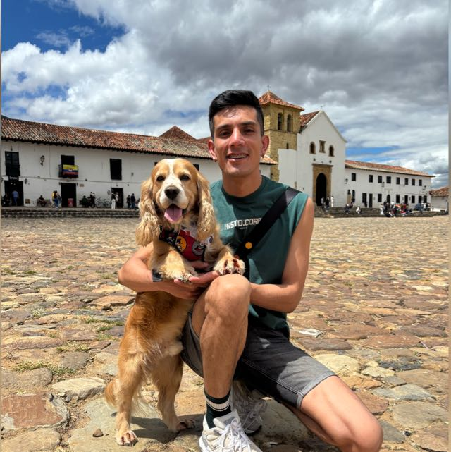
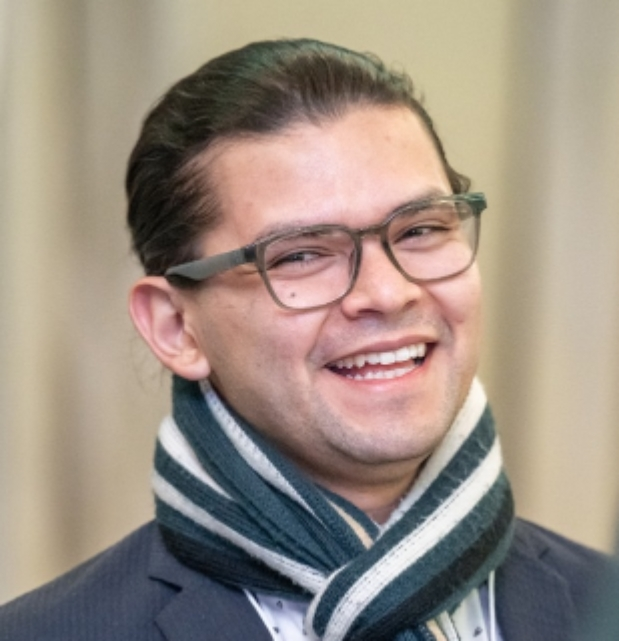
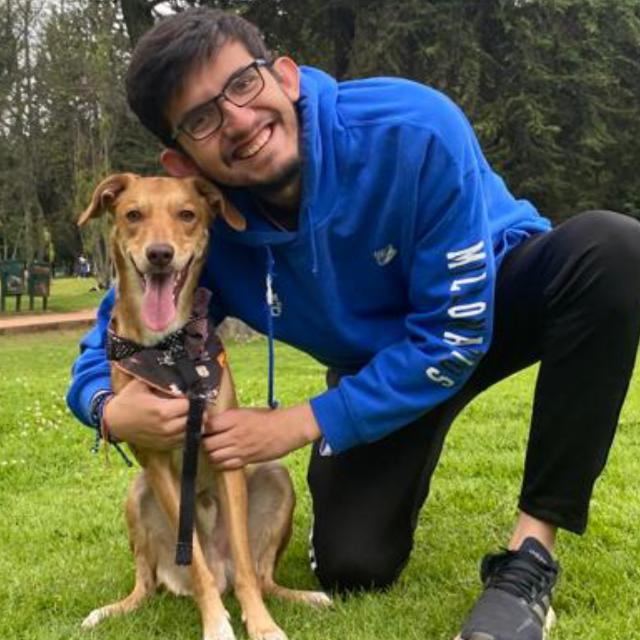
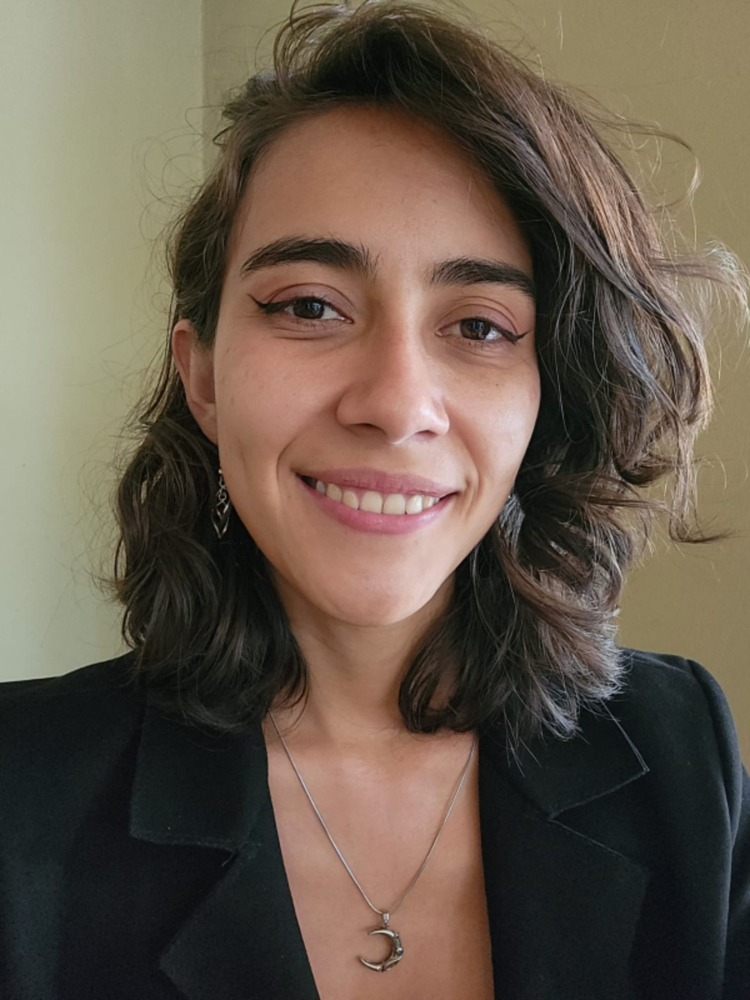
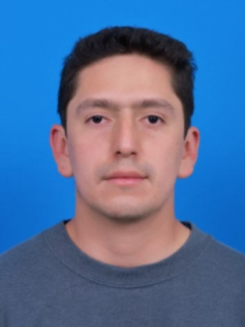
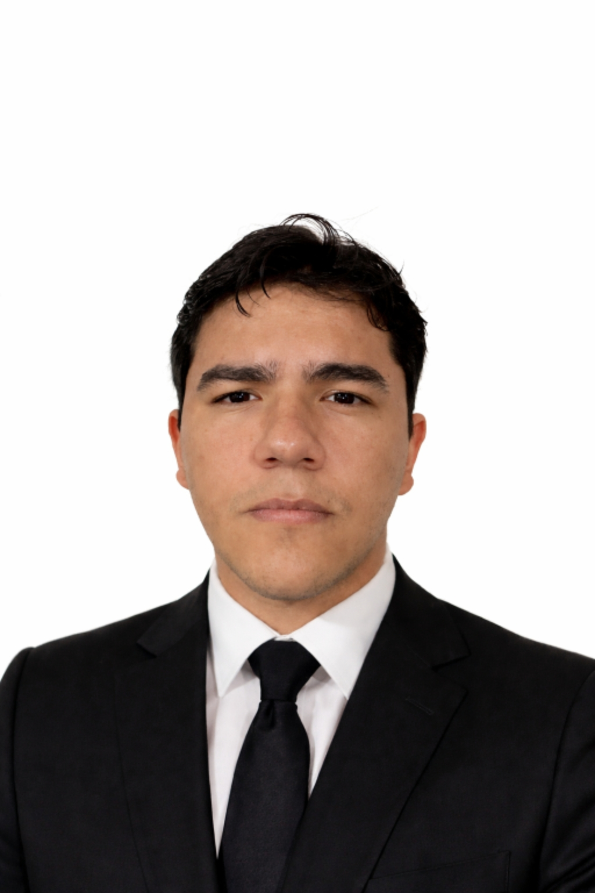

Dr. Luis Alejandro Morales-Marín PhD
Dr. Morales-Marín is an Assistant Professor of Hydrology and Water Resources in the Department of Civil and Agricultural Engineering at the Universidad Nacional de Colombia, Bogotá, Colombia. He holds a BSc in Civil Engineering from the Escuela Colombiana de Ingeniería, an MSc in Water Resources from the Universidad Nacional de Colombia, and a PhD from University College London (UCL).

Estiveen Rodriguez
Estiveen is a Civil Engineer from the Universidad Nacional de Colombia.
Thesis title: Convection-Permitting WRF Climatology and Hydrological Responses to Global Change in Bogotá, Colombia.
Edwin Amaya
Edwin is a Geological Engineer from the Universidad Pedagógica y Tecnológica de Colombia.
Thesis title: Spatial Calibration of Debris-Flow Hydrodynamic Models Using Historical Events: A Case Study of the Naranjal Creek, Quetame, Colombia.
Julio González
Julio is a Civil Engineer from the Universidad Nacional de Colombia.
Thesis title: Hydraulic Modeling to Identify Alternatives for Reducing Flood and Erosion Risk along the Magdalena River in Puerto Servíez, Puerto Boyacá, Boyacá, Colombia.
Daniel Barreto
Daniel is a Civil Engineer from the Escuela Colombiana de Ingeniería.
Thesis title: Implementation of a Hybrid Hydrological Model for Simulating Daily Mean Streamflow in a Natural Catchment: A Case Study of the Teusacá River Basin, Cundinamarca, Colombia.

Luis López
Luis is an Agricultural Engineer from the Universidad Nacional de Colombia.
Thesis title: Implementation of Artificial Intelligence Models for Predicting Daily Mean Streamflow across Different Geographic Regions.
Oscar Camargo
Oscar is a Civil Engineer from the Universidad Nacional de Colombia.
Thesis title: Historical Reconstruction of Water Abstractions and the Water Balance in the Lake Tota Basin, Boyacá, Colombia.
Thomas Aranda
Thomas is a Civil Engineer from the Universidad Nacional de Colombia.
Thesis title: Estimation and Analysis of Baseflow in Colombian Páramo Catchments.

José Alsonso
José is a Civil Engineer from the Universidad Nacional de Colombia.
Thesis title: Estimation of Total Scour Using HEC-RAS, Iber, and Empirical Methods at the Río Negro Alto (Guaduero) Bridge: A Comparative Analysis for the Design of Scour Protection Structures.
Jorge Leal
Jorge is a Civil Engineer from the Universidad Nacional de Colombia.
Thesis title: Validation of Water Levels in the San Rafael and Chuza Reservoirs of the Chingaza System Using Surface Water and Ocean Topography (SWOT) Satellite Data.

Lucia Salazar
Lucia is an Environmental Engineer from the Universidad Distrital Francisco José de Caldas.
Thesis title: Analysis and Prediction of Meteorological Droughts in Bogotá D.C. and Surrounding Catchments Using Artificial Intelligence Methods.

Sebastian Norato
Sebastian is a Civil Engineer from the Universidad Nacional de Colombia.
Thesis title: Classification of Streamflow Regimes in Natural Catchments in Colombia.

Nicolás Muñoz
Nicolás is a Civil Engineer from the Universidad Nacional de Colombia.
Thesis title: Evaluation of Multiple Lumped Hydrological Models in Colombian Natural Catchments under Different Climatic Conditions.
Daniela Ortega
Daniela is an Environmental and Sanitary Engineer from the Universidad La Salle.
Thesis title: Short-Term Predictive Modeling of Meteorological Droughts in the Magdalena–Cauca Macro-Basin Using Machine Learning and Development of an Application Repository.
Mariana Ulchur
Mariana is a Civil Engineer from the Universidad del Cauca.
Thesis title: Estimation of Critical Rainfall for the Occurrence of Shallow Landslides in the Molino River Basin, Cauca Department, Colombia.

José Cortés
José is an Agricultural Engineer from the Universidad Nacional de Colombia.
Thesis title: Future Effects of Climate Change on Water Quality in Reservoirs in Colombia.

Daniel Salas
Daniel is an Environmental Engineer from the Universidad Nacional de Colombia.
Thesis title: Spatiotemporal Analysis of 40 Years of Extreme Precipitation Events in Colombia.

Andres Pinto
Andres is a Sanitary Engineer from the Universidad Distrital Francisco José de Caldas.
Thesis title: Prediction of Extreme Precipitation Events in the Urban Area of Bogotá Using Artificial Intelligence Models.

Edgar Virguez
Edgar is a Sanitary Engineer from the Universidad Distrital Francisco José de Caldas.
Thesis title: Analysis of Dominant Hydrological Processes in a Colombian Andean Páramo Catchment Using Physically Based Hydrological Modeling.